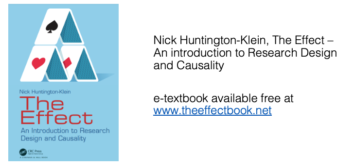
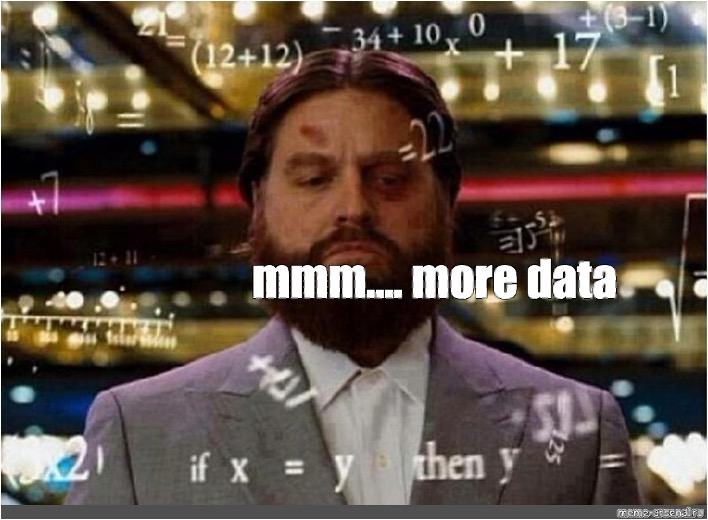
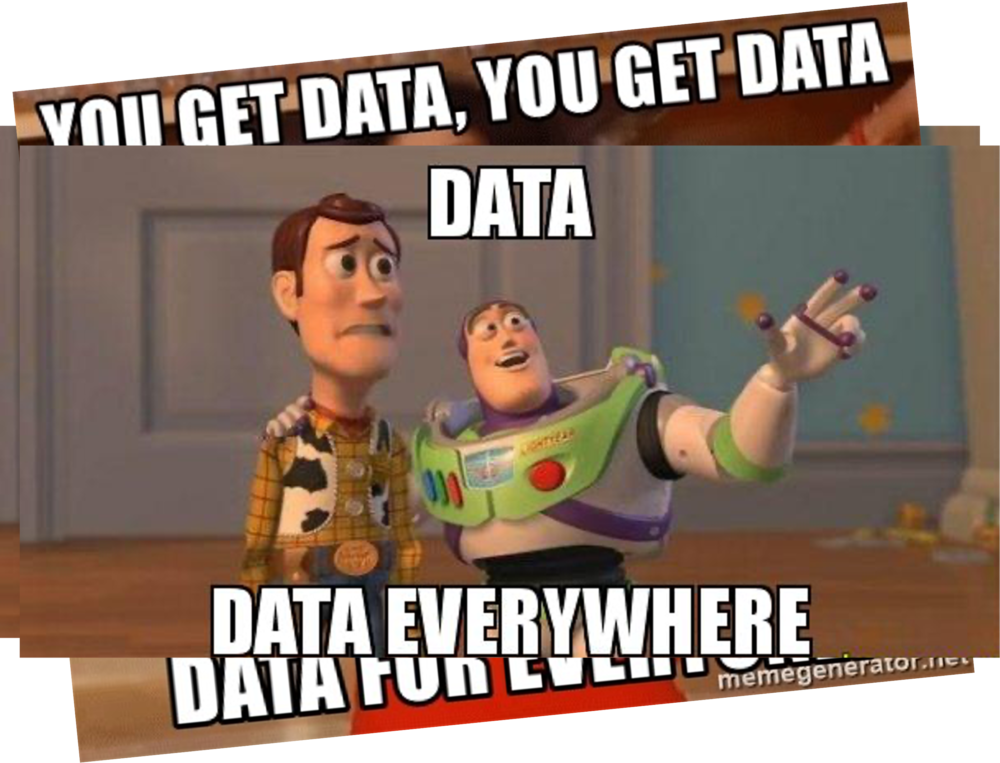

This is an applied econometrics class for behavioural science
Econometrics is a field that covers how economists think about statistical analysis
Why do we care about econometrics?
Many other social science fields (even epidemiology) pick up econometric tools as well because of how useful they tend to be
So what is econometrics?
Econometrics focuses on the study of observational data
Observational data are measurements of things that the researcher does not control
Given that we are working with observational data, we still want to understand the causes of things
The world is what it is
From next week onwards though, we will explore ways to study it
Welcome to Econometrics
This is a great course (tough one but great)
Why?
Gives you the ability to think about and answer questions you are interested in
And to better understand and judge the existing body of literature
The classic Tik-Tok, Instagram video that starts with “A new study says…”? You can now have an idea of how robust/serious their inferences are.
Why applications and not econometrics?
PB4A7 and PB413 are applied courses. You need to know how to use statistics, and why you’re using them – you will not master the nuts or bolts of statistical theory!
For those who want more information
Will provide material on the website of the class
Visit me during the office hours
We will discuss additional courses to audit
Admin
Review the syllabus (and other materials on Moodle and the PB4A7 website). Reading assignments there
Our textbook is The Effect, by Huntington-Klein, available online for free.
Also these slides
Programming in STATA (we will get to this on later)
Assignment: End of term paper & poster
Textbook

Causality and Prediction
Great! Still, why do we care about this class?
In econometrics, we are working with data
Statisticians also work with data
So do data scientists
The goals for these groups differ
Causality and Prediction
Data scientists are generally concerned with prediction
They want to use the data at hand to predict what comes next
They generally don’t care why they’re making the prediction they are
This can be really handy for certain tasks - “is this picture a cat or a dog?” “what’s the probability that a customer with qualities X, Y, and Z will end up purchasing our good?” “do you have lymphoma?”
Causality and Prediction
Econometricians, on the other hand, care almost exclusively about why
Data scientists want to minimize prediction error
Econometricians want to minimize inference and identification error
We want to correctly understand the underlying data generating process
Data

Data
Data

Inference Error and Randomness
One big problem we face when trying to figure out how variables relate to each other is randomness
This is simply the fact that, when we gather data, we can only possibly get a subsample of all the data
So, just by random chance, the relationship we get in our data might not be quite the same as the true relationship
Inference Error and Randomness
So if we look in a data set and see that \(X\) and \(Y\) appear to be positively related to each other…
Are they actually positively related, or is that just a random chance?
If they are positively related, maybe we’re understating or overstating how positively related
Inference Error and Randomness
If the true relationship is 0, then in the data we’ll see a positive relationship half the time, and a negative relationship half the time
Even though the truth is 0!
How can we properly make an inference about whether the relationship is 0 or not (or positive, or negative, or how positive or negative), taking into account this randomness?
That’s being careful about inference. The statisticians teach us all about this!
Identification Error
What is an identification error?
Identification is how you link the result you see with the conclusion you draw from it
For example, say you observe that kids who play video games are more aggressive in everyday life (result), and you conclude from that result that video games make kids more aggressive (conclusion)
If seeing that result is actually evidence for that conclusion, then we are properly identified
Identification Error
But if there’s another reason why we might see that result, i.e. if the same result could give us a different conclusion, like kids who are aggressive play more video games or people notice aggression more when kids play video games, then we have made an identification error - our result was not identified!
Identification error is when your result in the data doesn’t actually have a clear theoretical (“why” or “because”) interpretation
For example, if you observe that people tend to wear more shorts on days they eat more ice cream, and you conclude that eating ice cream makes you put on shorts, you have committed an identification error